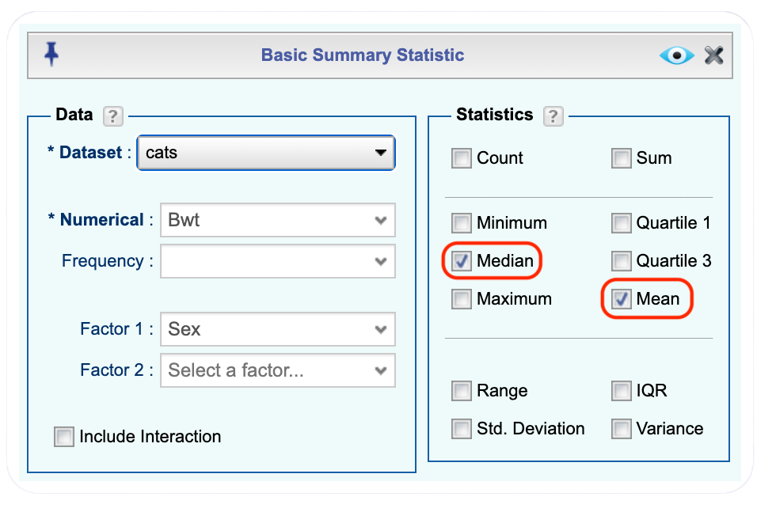
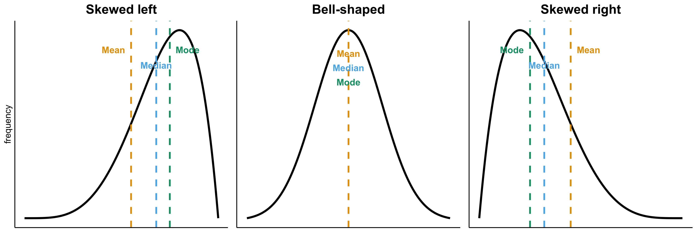
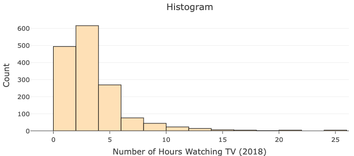
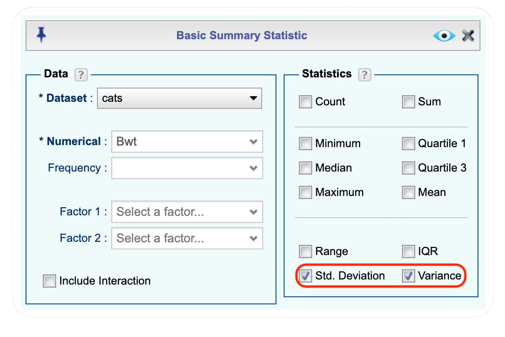
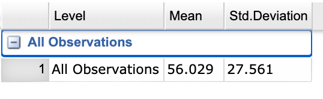
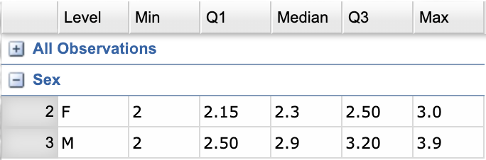
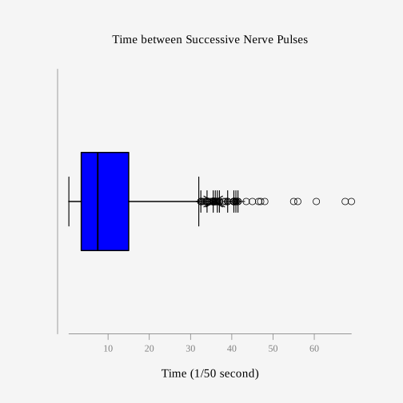

| Sex | Bwt | Hwt |
|---|---|---|
| F | 2.0 | 7.0 |
| F | 2.0 | 7.4 |
| F | 2.0 | 9.5 |
| F | 2.1 | 7.2 |
| F | 2.1 | 7.3 |
| F | 2.1 | 7.6 |
3 Numerical Description of Data
Chapter 1 discussed what a population, sample, parameter, and statistic are, as well as how to take different types of samples. Chapter 2 discussed ways to graphically display data. There was also a discussion of important characteristics: center, variations, distribution, outliers, and changing characteristics of the data over time. Distributions and outliers can be identified using graphical means. Finding the center and variation can be done using numerical methods that will be discussed in this chapter. Both graphical and numerical methods are part of a branch of statistics known as descriptive statistics. Later, descriptive statistics will be used to make decisions and/or estimate population parameters using methods that are part of the branch called inferential statistics.
3.1 Measures of Center
This section focuses on measures of central tendency. Many times you are asking what to expect on average. For example, when you pick a major, you would probably ask how much you can expect to earn in that field. If you are thinking of relocating to a new town, you might ask how much you can expect to pay for housing. If you are planting vegetables in the spring, you might want to know how long it will be until you can harvest. These questions, and many more, can be answered by knowing the center of the data. There are three measures of the “center” of the data: the mode, median, and mean. Any of the values can be referred to as an “average.”
The mode is the data value that occurs most frequently in the data. To find it, you count how often each data value occurs, and then determine which value occurs most often. If there is a tie between two values for the most number of times, then both values are the mode and the data are called bimodal (two modes). If every data value occurs the same number of times, there is no mode. If there are more than two values that appear the most times, then usually there is no mode. The mode is not always a useful measure of center, especially when a dataset has more than one mode.
The median is the data value in the middle of a sorted list of data. To find the median, you arrange the data in order and then determine which value is in the middle of the data values.
The mean is the arithmetic average of the numbers. This is the center that most people call the average, though all three – mean, median, and mode – really are averages.
There are no symbols for the mode and the median, but the mean is used a great deal, so statisticians gave it a symbol. There are actually two symbols: one for the population mean (parameter) and one for the sample mean (statistic). In most cases, you cannot find the population parameter, because you don’t have values for the entire population, so you use the sample mean (statistic) to estimate the population mean (parameter).
3.1.1 Population Mean and Sample Mean
Because the mean is used extensively in statistics, it has special notation that distinguishes between a population and a sample. The population mean, denoted by the Greek letter \(\mu\) (pronounced ``mu”), represents the true average of an entire population. It is calculated using the formula \(\mu=\frac{\sum{x}}{N}\), where \(N\) is the total number of values in the population, \(x\) represents each individual data value, and \(\sum{x}\) means to add up all the data values. In practice, we rarely know the population mean because we typically cannot collect data from every member of a population.
Instead, we work with samples and calculate the sample mean, denoted by \(\bar{x}\) (pronounced ``x-bar”). The sample mean uses the same calculation process as the population mean but with different notation: \(\bar{x}=\frac{\sum{x}}{n}\), where \(n\) is the number of values in the sample. Notice that we use a lowercase \(n\) for sample size and an uppercase \(N\) for population size. The sample mean \(\bar{x}\) serves as our best estimate of the unknown population mean \(\mu\). This relationship between sample statistics and population parameters is fundamental to inferential statistics – we use what we observe in a sample to make informed conclusions about the larger population.
Example 3.1 (Finding the Mean and Median Using Rguroo) Suppose a vet wants to find the average weight of cats. The weights (in kg) of 144 cats are given in a dataset named cats. Find the mean and median of the weight of a cat. The first six rows of this dataset are shown in Table 3.1.
Solution
Click to expand the box below to see instructions to import and view the cats dataset in your Data Toolbox in Rguroo.
- Go to the Data toolbox.
- From the Data Import dropdown, select Dataset Repository.
- In the top search box, type MASS, then select the MASS repository.
- In the middle search box, type cats, and select the cats dataset that appears in the lower panel.
- Click the button. The dataset will be imported into your Rguroo account.
- Click the button to close the Rguroo dialog.
- To view the dataset, double-click cats under the Data toolbox list.
Looking at the data frame for cats weights, Table 3.1, you see that there are several variables. A Code Book describes the dataset, explains what the variables are including the units, and the source of the data frame. The code book for the cats is below.
Code book for cats Dataset

Before starting any mathematics problem, it is always a good idea to define the unknown in the problem. In statistics, you want to define the variable. The symbol for the variable is \(x\).
The variable is \(x\) = weight of a cat
Click to expand the box below see how to calculate the mean and median in Rguroo.
Before you begin: Make sure you have already imported the cats dataset into your Data Toolbox, as was shown here.
- Open the Data toolbox.
- Click on the Functions dropdown, and select Summary Statistic. This opens the Basic Summary Statistic.
- From the Dataset dropdown, select the cats dataset.
- From the Numerical dropdown, select the Bwt variable.
- In the Statistics section of the dialog, select the checkbox for Mean and Median.
- Click the preview icon
 to see the summary statistics which is shown in Figure 3.1.
to see the summary statistics which is shown in Figure 3.1.
Click here to see the Rguroo dialog


The mean weight is 2.72 kg.
The median weight is 2.7 kg also. It appears the average weight of all cats in this dataset is 2.7 kg.
Example 3.2 (Finding Mean and Median with Factor) Suppose you want to know if male cats weigh more than female cats. Looking at the variables, you notice that there is a variable for the sex of the cat. You can look at the weights of males and females separately.
Solution
Click to expand the box below see how to calculate the mean and median, separated by sex, in Rguroo.
Before you begin: Make sure you have already imported the cats dataset into your Data Toolbox, as was shown here.
- Open the Data toolbox.
- Click on the Functions dropdown, and select Summary Statistic. This opens the Basic Summary Statistic dialog.
- From the Dataset dropdown, select the cats dataset.
- From the Numerical dropdown, select the Bwt variable.
- From the Factor 1 dropdown, select the Sex factor.
- In the Statistics section of the dialog, select the checkbox for Mean and Median.
- Click the preview icon to see the summary statistics.
Click here to see the Rguroo dialog


Notice that the female cats’ mean weight is 2.36 kg and the male cats’ mean weight is 2.9 kg. The median weight of female cats is 2.3 kg and for males it is 2.9 kg. So it does appear that male cats weigh a bit more than the female cats.
There are many different summary statistics that can be found. An example is the minimum and maximum value. In the next example, you will see how to find the min and max values and then filter them out of a dataset to see what effect they have on the mean and median.
Example 3.3 (Effect of Extreme Values on Mean and Median) Find the minimum and maximum values of cats weights.
Solution
The steps to find the minimum and the maximum in Rguroo are similar to finding the mean and median. In the Statistics section of the dialog, select the checkbox for Minimum and Maximum.
Figure 3.3 shows the Basic Summary Statistic Dialog and Output from Rguroo for the minimum and maximum of cats body weight.


The minimum weight of a cat in this data frame is 2 kg and the maximum weight of a cat is 3.9 kg.
You can create two new datasets in Rguroo by subsetting (filtering). One dataset will exclude the maximum value and include values less than 3.9, and the other will exclude the minimum value and include values greater than 2.
Click to expand the box below to see how to obtain a subset of the cats dataset in Rguroo that includes values less than 3.9 kg.
Before you begin: Make sure you have already imported the cats dataset into your Data Toolbox, as was shown here.
- Open the Data toolbox.
- Click on the Functions dropdown, and select Subset. This opens the Data Subset dialog.
- From the Dataset dropdown, select the cats dataset.
- Select the button.
- To create a new Logical Expression, click the green plus icon
 .
. - From the Variable dropdown, select the Bwt. From the Op. (operations) dropwdown, select the less than symbol (<). In the Value column, enter 3.9 (the maximum body weight of cats dataset). Click the .
- Click the preview icon to see a preview of the filtered data.
- In Save As… textbox, name the new dataset cats_nomax and click the button.
Click here to see the Rguroo dialog


Then create a dataset that excludes the minimum value using the same steps shown here, except in the Logical Expression dialog, choose the greater than (>) operator in the Op. dropdown and enter 2 in the Value column, as shown in Figure 3.4. Save this new dataset as cats_nomin.

Now you can find the mean and median of each new dataset using the steps described here using the new datasets cats_nomax and cats_nomin.
The mean without the maximum value is 2.70 kg, and the median is 2.7 kg.
The mean without the minimum value is 2.75 kg, and the median is 2.7 kg.
From this example, the mean of the cats dataset with all the values is 2.72 kg, while the median is 2.7 kg. Notice that when the maximum value was excluded from the dataset, the mean decreased slightly but the median did not change, and when the minimum value was excluded from the dataset, the mean increased a little but the median did not change. This shows that the mean is affected by extreme values, while the median is not. We say the median is a resistant measure of center because it is not affected by extreme values as much.
An outlier is a data value that is very different from the rest of the data. It can be really high or really low. An extreme value may be an outlier if it is far enough from the center. If there are extreme values in the data, the median is a better measure of the center than the mean. If there are no extreme values, the mean and the median will be similar so most people use the mean. The mean is not a resistant measure because it is affected by extreme values. The median is a resistant measure because it not affected by extreme values.
You need to be aware that people generally choose the measure of center that best supports their claim. When you read an article in the newspaper and it talks about the “average” it usually means the mean but sometimes it refers to the median. Some articles will use the word “median” instead of “average” to be more specific. If you need to make an important decision and the information says “average”, it would be wise to ask if the “average” is the mean or the median before you decide.
As an example, suppose that a company wants to use the mean salary as the average salary for the company. This is because the high salaries of the administrators will pull the mean higher. The company can say that employees are paid well because the average is high. However, the employees want to use the median since it discounts the extreme values of the administration and gives a lower measure of the average. This makes the salaries seem lower and suggests that a raise is in order.
Why use the mean instead of the median? Imagine repeatedly taking different samples from the same population. Some samples may include more large values, while others may include more small values. When we calculate the mean for each sample, some sample means will overestimate the true center of the population and others will underestimate it. Over many samples, these overestimates and underestimates tend to balance out. The median, however, can tend to underestimate or overestimate the center more often in one direction, depending on how the middle values fall in the samples. Because of this, the mean does not systematically overestimate or underestimate the center of the population, making it a reliable measure of center.
To understand how different measures of center relate to skewed or symmetric distributions, see Figure 3.5. For a left-skewed distribution, the mean is smaller than the median. For a right-skewed distribution, the mean is larger than the median. For a symmetric distribution, the mean and the median are the same.

3.1.2 Weighted Average
Another type of average is a weighted average. Weighted averages are commonly used in situations where some components matter more than others. For example, a teacher may use a weighted average when calculating a student’s final course grade. Homework, quizzes, and exams may all contribute to the final grade, but exams might count more because they measure overall understanding more directly. In this case, exams are given more weight than homework, so they have a larger impact on the final grade. Similarly, employers may use weighted averages in performance evaluations when some aspects of a job are more important than others.
As an example, a full-time teacher at a community college may be evaluated on their service to the college, their service to the community, whether their paperwork is turned in on time, and their teaching. However, teaching is much more important than whether their paperwork is turned in on time. When the evaluation is completed, more weight needs to be given to the teaching and less to the paperwork. This is a weighted average.
To calculate a weighted average, each data value is multiplied by its weight (the number representing its importance), then these products are added together. Finally, this sum is divided by the total of all the weights. The formula captures this process:
\(\text{weighted average}=\frac{\sum{x \cdot w}}{\sum{w}}\)
where \(x\) represents each data value and \(w\) represents the weight (or importance) assigned to that value.
Example 3.4 (Calculating Weighted Average) In your biology class, your final grade is based on several components: a lab score, scores on two major tests, and your score on the final exam. Each component is graded out of 100 points. The lab score is worth 15% of the course grade, the two exams are worth 25% each, and the final exam is worth 35% of the course. Suppose you earned scores of 95 on the labs, 83 and 76 on the two exams, and 84 on the final exam. Compute your weighted average for the course.
Solution
Variable: \(x\) = score
A weighted average can be found using Rguroo. First, we will create a new dataset in Rguroo. Click to expand the box below to see how to create a new dataset in Rguroo:
- Open the Data toolbox.
- Click on the Data Import dropdown, and select Create New Dataset. This opens the Create New Dataset dialog. Specify the number of rows and columns for your new dataset (optional), and click the button. This opens Rguroo’s dataset editor.
- The default variable names will be Var1, Var2, etc. To change the variable name, move your cursor over the variable name in the column header. You will see the Variable Context Menu icon . Click on the icon to open the variable context menu.
- From the variable context menu select the option Rename. This will bring up the Rename Variable dialog box. In the dialog box, type in the new name for your variable and press enter. The new name will appear in the column header. Note that variable names cannot have spaces. For this example we use two have two variables; specify the names score and weight in two columns.
- Enter your data (score and weights) in the two columns.
- Enter a name for your dataset in the Save As textbox on the top, and click the button to save your dataset. For this example, name the dataset biology_grade.
Click here to see the Rguroo dialog and new dataset


To calculate the weighted average in Rguroo, you will follow similar steps as described here. In the Basic Summary Statistics dialog box select the biology_grade from the dataset dropdown, select score in the Numerical dropdown, and select weight in the frequency dropdown as shown in figure Figure 3.6.


Your weighted mean in the biology class is 83.4%. Using the traditional grading scale, you have a B in the class.
Example 3.5 (Calculating Weighted Averages) The faculty evaluation process at John Jingle University rates a faculty member on the following activities: teaching, publishing, committee service, community service, and submitting paperwork in a timely manner. The process involves reviewing student evaluations, peer evaluations, and supervisor evaluation for each teacher and awarding him/her a score on a scale from 1 to 10 (with 10 being the best). The weights for each activity are 20 for teaching, 18 for publishing, 6 for committee service, 4 for community service, and 2 for paperwork.
- One faculty member had the following ratings: 8 for teaching, 9 for publishing, 2 for committee work, 1 for community service, and 8 for paperwork. Compute the weighted average of the evaluation.
- Another faculty member had ratings of 6 for teaching, 8 for publishing, 9 for committee work, 10 for community service, and 10 for paperwork. Compute the weighted average of the evaluation.
- Which faculty member had the higher average evaluation?
Solution
- One faculty member had the following ratings: 8 for teaching, 9 for publishing, 2 for committee work, 1 for community service, and 8 for paperwork. Compute the weighted average of the evaluation.
Variable: \(x\) = rating, \(w\) = weight
To find the weighted average using Rguroo, start by creating a new dataset as described here. The new dataset, including weights and scores for each faculty, is shown in the figure Figure 3.7 below.

Calculate the weighted average in Rguroo using the same steps described here. In the Basic Summary Statistics dialog box select the faculty_ratings from the dataset dropdown, select faculty_a in the Numerical dropdown, and select weight in the frequency dropdown as shown in figure Figure 3.8.


The weighted average is 7.08.
- Another faculty member had ratings of 6 for teaching, 8 for publishing, 9 for committee work, 10 for community service, and 10 for paperwork. Compute the weighted average of the evaluation.
The weighted mean can be calculated in the same fasion as part (a). In the Basic Summary Statistics dialog box select the faculty_ratings from the dataset dropdown, select faculty_b in the Numerical dropdown, and select weight in the frequency dropdown as shown in figure


The weighted average for this employee is 7.56.
Which faculty member had the higher average evaluation?
The second faculty member has a higher average evaluation.
3.1.3 Choosing the Appropriate Measure of Center
Different measures of center work with different types of data. The type of data you have determines which measures of center are appropriate to use.
The mode can be used with any type of data – nominal, ordinal, interval, or ratio – because it simply identifies which value appears most frequently. Since finding the mode only requires counting how often each value occurs, it works regardless of whether the data has numerical meaning or can be ordered.
The median can be used with ordinal, interval, and ratio data. To find the median, you must arrange the data values in order from smallest to largest (or vice versa). This means the data must have a meaningful order or ranking. Nominal data, which has categories with no natural order (like colors or types of pets), cannot have a median calculated.
The mean can only be used with interval and ratio data because calculating it requires adding the data values together and dividing by the count. This mathematical operation only makes sense when the data values are actual numbers with meaningful numerical differences between them. For example, you can calculate the mean temperature or mean income, but you cannot calculate a mean for categories like favorite ice cream flavors or shirt sizes.
3.1.4 Homework for Measures of Center Section
Use Rguroo on all problems. State the variable on all problems.
- Cholesterol levels were collected from patients a certain number of days after they had a heart attack and the first six rows of the data are shown in Table 3.2. Find the mean and median for cholesterol levels 2 days after the heart attack.
The dataset for this exercise is available in the Rguroo dataset repository Kozak, with the dataset name cholesterol.

| patient | day2 | day4 | day14 |
|---|---|---|---|
| 1 | 270 | 218 | 156 |
| 2 | 236 | 234 | NA |
| 3 | 210 | 214 | 242 |
| 4 | 142 | 116 | NA |
| 5 | 280 | 200 | NA |
| 6 | 272 | 276 | 256 |
Code book for Cholesterol Dataset
Description A study was conducted at a major north eastern American medical centre regarding blood cholesterol levels and heart-attack incidents. A total of 28 heart-attack patients had their cholesterol levels measured two days, 4 days, and 14 days after the attack. In addition, cholesterol levels were recorded for a control group of 30 people who had not had a heart attack. The units of cholesterol measurement are not given in the original reference but are presumably mg/dL of blood.
This data frame contains the following columns:
Patient: Patient number
day2: Cholesterol level of patient 2 days after heart attack. (mg/dL)
day4: Cholesterol level of patient 4 days after heart attack. (mg/dL)
day14: Cholesterol level of patient 14 days after heart attack. (mg/dL)
Source Ryan, B. F., Joiner, B. L., & Ryan, Jr, T. A. (1985). Cholesterol levels after heart attack.
References Ryan, Joiner & Ryan, Jr, 1985
- The lengths (in kilometers) of rivers on the South Island of New Zealand and what body of water they flow into are given in a dataset named length. The first six rows of this datset are listed in Table 3.3 (Lee, 1994). Find the mean and median length of rivers that flow into the Pacific Ocean and the mean and median length of rivers that flow into the Tasman Sea.
The dataset for this exercise is available in the Rguroo dataset repository Kozak, with the dataset name length.
| river | length | flowsto |
|---|---|---|
| Clarence | 209 | Pacific |
| Conway | 48 | Pacific |
| Waiau | 169 | Pacific |
| Hurunui | 138 | Pacific |
| Waipara | 64 | Pacific |
| Ashley | 97 | Pacific |
Code book for Length Dataset
Description The data records the length of rivers in the South Island of New Zealand. The lengths are given in kilometres. The second variable, FlowsInto, indicates whether the river flows into the Pacific Ocean (0) or the Tasman Sea (1).
This data frame contains the following columns:
River: Name of the river
length: how long the river is in kilometers
flowsto: what body of water the river flows into Pacific Ocean is Pacific and the Tasman Sea is Tasman
Source Lee, A. (1994). Data analysis: An introduction based on r. Auckland.
References Lee, A. (1994). Data analysis: An introduction based on r. Auckland.
- Print-O-Matic printing company’s employees have salaries that are contained in a dataset named pay. The first six rows of these data are given in Table 3.4.
The dataset for this exercise is available in the Rguroo dataset repository Kozak, with the dataset name pay.
| employee | salary |
|---|---|
| CEO | 272500 |
| Driver | 58456 |
| CD74 | 100702 |
| CD65 | 57380 |
| Embellisher | 73877 |
| Folder | 65270 |
Code book for Pay Dataset
Description Salaries of Print-O-Matic printing company’s employees
This data frame contains the following columns:
employee:employees position in the company
salary: salary of that employee (Australian dollars (AUD))
Source John Matic provided the data from a company he worked with. The company’s name is fictitious, but the data is from an actual company.
References John Matic (2013)
Find the mean and median.
Find the mean and median with the CEOs salaries removed. Hint: You can filter the dataset to remove the CEOs’ salaries either by using the Rguroo Subset function following similar instructions as shown here or more simply using the dataset editor as shown below.
Before you begin: Make sure you have already imported the pay dataset into your Data Toolbox.
- Open the Data toolbox.
- Double click on the pay dataset to open it in the dataset editor.
- Click on the filter icon
 shown in the right margin of the dataset editor to open the list of variables.
shown in the right margin of the dataset editor to open the list of variables.
- From the list of variables, click on the employee variable to open the filter dialog for that variable.
- In the filter dialog, uncheck the box for CEO to exclude the CEO from the dataset.
- In Save As… textbox, name the new dataset pay_no_CEO and click the button.
Click here to see the Dataset Editor filtering process

What happened to the mean and median when the CEO’s salary was removed? Why?
If you were the CEO, who is answering concerns from the union that employees are underpaid, which average (mean or median) using the complete dataset of the complete dataset would you prefer? Why?
If you were a platen worker, who believes that the employees need a raise, which average (mean or median) using the complete dataset would you prefer? Why?
- Print-O-Matic printing company spends specific amounts on fixed costs every month. These costs are listed in the dataset cost. The first six rows of the data are shown in Table 3.5.
The dataset for this exercise is available in the Rguroo dataset repository Kozak, with the dataset name cost.
| charges | cost |
|---|---|
| Bank charges | 482 |
| Cleaning | 2208 |
| Computer expensive | 2471 |
| Lease payments | 2656 |
| Postage | 2117 |
| Uniforms | 2600 |
Code book for Cost Dataset
Description fixed monthly charges for Print-0-Matic printing company
This data frame contains the following columns:
charges: Categories of monthly fixed charges
cost: fixed month costs (AUD)
Source John Matic provided the data from a company he worked with. The company’s name is fictitious, but the data is from an actual company.
References John Matic (2013)
Find the mean and median.
Find the mean and median with the bank charges removed.
What happened to the mean and median when the bank charges were removed? Why?
If it is your job to oversee the fixed costs, which average (mean or median) using the complete dataset would you prefer to use when submitting a report to administration to show that costs are low? Why?
If it is your job to find places in the budget to reduce costs, which average (mean or median) using the complete dataset would you prefer to use when submitting a report to administration to show that fixed costs need to be reduced? Why?
- Looking at graph 3.1.2, state if the graph is skewed left, skewed right, or symmetric and then state which is larger, the mean or the median?
Graph 3.1.2: Skewed or Symmetric Graph

- Looking at graph 3.1.3, state if the graph is skewed left, skewed right, or symmetric and then state which is larger, the mean or the median?
Graph 3.1.3: Skewed or Symmetric Graph

An employee at Coconino Community College (CCC) is evaluated based on goal setting and accomplishments toward the goals, job effectiveness, competencies, and CCC core values. Suppose for a specific employee, goal 1 has a weight of 30%, goal 2 has a weight of 20%, job effectiveness has a weight of 25%, competency 1 has a weight of 4%, competency 2 has a weight of 3%, competency 3 has a weight of 3%, competency 4 has a weight of 3%, competency 5 has a weight of 2%, and core values has a weight of 10%. Suppose the employee has scores of 3.0 for goal 1, 3.0 for goal 2, 2.0 for job effectiveness, 3.0 for competency 1, 2.0 for competency 2, 2.0 for competency 3, 3.0 for competency 4, 4.0 for competency 5, and 3.0 for core values. Find the weighted average score for this employee. If an employee has a score less than 2.5, they must have a Performance Enhancement Plan written. Does this employee need a plan?
An employee at Coconino Community College (CCC) is evaluated based on goal setting and accomplishments toward goals, job effectiveness, competencies, CCC core values. Suppose for a specific employee, goal 1 has a weight of 20%, goal 2 has a weight of 20%, goal 3 has a weight of 10%, job effectiveness has a weight of 25%, competency 1 has a weight of 4%, competency 2 has a weight of 3%, competency 3 has a weight of 3%, competency 4 has a weight of 5%, and core values has a weight of 10%. Suppose the employee has scores of 2.0 for goal 1, 2.0 for goal 2, 3.0 for goal 3, 2.0 for job effectiveness, 2.0 for competency 1, 3.0 for competency 2, 2.0 for competency 3, 3.0 for competency 4, and 4.0 for core values. Find the weighted average score for this employee. If an employee that has a score less than 2.5, they must have a Performance Enhancement Plan written. Does this employee need a plan?
A statistics class has the following activities and weights for determining a grade in the course: test 1 worth 15% of the grade, test 2 worth 15% of the grade, test 3 worth 15% of the grade, homework worth 10% of the grade, semester project worth 20% of the grade, and the final exam worth 25% of the grade. If a student receives an 85 on test 1, a 76 on test 2, an 83 on test 3, a 74 on the homework, a 65 on the project, and a 79 on the final, what grade did the student earn in the course?
A statistics class has the following activities and weights for determining a grade in the course: test 1 worth 15% of the grade, test 2 worth 15% of the grade, test 3 worth 15% of the grade, homework worth 10% of the grade, semester project worth 20% of the grade, and the final exam worth 25% of the grade. If a student receives a 92 on test 1, an 85 on test 2, a 95 on test 3, a 92 on the homework, a 55 on the project, and an 83 on the final, what grade did the student earn in the course?
3.2 Measures of Spread
Variability is a fundamental concept in statistics that describes how spread out data values are from each other. Consider measuring the height of everyone in your classroom – you’ll quickly notice that not everyone has the same height. Some students are taller, some are shorter, and there’s a range of heights in between. This spread in the data is what we call variability. The same principle applies to other measurements: if you sampled the income levels of people in a town, you’d find that incomes vary widely from person to person.
Understanding variability helps us describe datasets more completely. When data values are clustered closely together, we say there is low variability. When data values are spread far apart, we say there is high variability. To quantify this spread, we need numerical measures that capture how dispersed the data are. This section introduces several measures of variability, also known as measures of variation or spread.
Recall the example where we calculated the average weight of a cat to be 2.72 kg. While this tells us the center of the data, it doesn’t tell us the whole story. Were most cats close to this weight, or did weights vary dramatically? We know the highest and lowest weights, but what about everything in between? Understanding only the center leaves important questions unanswered.
To fully describe a dataset, we need measures of both center and spread. The measures of variability discussed in this section provide that additional information.
The range of a set of data is the difference between the highest and lowest data values (the maximum and minimum values). The interval refers to the lowest and highest values themselves. The range is a single value while the interval consists of two values.
Example 3.6 (Calculating the Range) Solution From the example, the maximum weight of a cat was 3.9 kg and the minimum was 2 kg. So the range is \(3.9-2=1.9 kg\). But what does that tell you? You don’t know if the weights are really spread out, or if they are close together.
Unfortunately, the range does not provide a very accurate picture of variability because it only considers two values: the highest and lowest. A better approach is to examine how far each data value is from the mean. This distance from the mean is called a deviation. By looking at all the deviations together, we get a much more complete picture of how spread out the data are.
3.2.1 Variance and Standard Deviation
To measure the overall spread of data, statisticians calculate the average of these squared deviations, which is called the variance. The variance gives us a single number that captures how dispersed the data values are from the mean. For a population, the variance is denoted by \(\sigma^2\) (where \(\sigma\) is the Greek letter sigma).
The population variance is calculated using the formula:
\[\sigma^2 = \frac{\sum\left(x-\mu \right)^2}{N}\]
where \(\mu\) is the population mean, \(N\) is the population size, and \(\sum\) means to sum all the squared deviations.
While variance is mathematically useful, it has one drawback: it’s measured in squared units. For example, if your data are heights measured in centimeters, the variance would be in square centimeters (cm \(^2\)), which is difficult to interpret. To solve this problem, we take the square root of the variance to get the standard deviation, denoted by \(\sigma\) for a population.
The population standard deviation is:
\[\sigma =\sqrt{ \frac{\sum\left(x-\mu \right)^2}{N}}\]
The standard deviation is measured in the same units as the original data, making it much easier to understand and communicate. If your data are in kilograms, the standard deviation is also in kilograms.
3.2.2 Sample Variance and Sample Standard Deviation
Since we typically work with samples rather than entire populations, we need sample versions of these measures. The sample variance, denoted by \(s^2\), is calculated similarly to the population variance but with one important difference: we divide by \(n-1\) instead of \(n\).
The sample variance is:
\[s^2=\frac{\sum\left(x-\bar{x}\right)^2}{n-1}\]
where \(\bar{x}\) is the sample mean and \(n\) is the sample size.
The reason we use \(n-1\) instead of \(n\) relates to a statistical concept called degrees of freedom. Using \(n-1\) makes the sample variance a better estimate of the population variance. While the mathematical reasoning is complex, the practical result is that dividing by \(n-1\) corrects for the bias that would occur if we divided by \(n\).
The sample standard deviation is simply the square root of the sample variance:
\[s=\sqrt{ \frac{\sum\left(x-\bar{x}\right)^2}{n-1}}\]
Like the population standard deviation, the sample standard deviation is measured in the same units as the original data.
3.2.3 Computing Variance and Standard Deviation
While understanding these formulas is important, in practice you’ll typically use technology (such as Rguroo or statistical software) to calculate variance and standard deviation. These tools handle the computations quickly and accurately, allowing you to focus on interpreting the results.
Example 3.7 (Calculating the Standard Deviation) For the dataset cats (Table 3.1) find the variance and standard derivation for weight of cats. Then find the variance and standard deviation separated by sex of the cat.
Solution
When using Rguroo, you would perform the similar steps as described in calculation mean and medianhere, and select standard deviation and variance, as shown in the figure Figure 3.11.

The output is shown in Figure 3.12. The variance for all cats is 0.24 \(kg^2\) and the standard deviation is 0.49 kg.

To find out the mean, variance, and standard deviation for each sex of the cats, we use a similar function as in Figure 3.11 and select sex from the Factor 1 dropdown, as shown in Figure 3.13


You can see that the mean weight of females cats is 2.36 kg, the variance is 0.075 \(kg^2\), and the standard deviation is 0.27 kg. For males cats, the mean is 2.9 kg, the variance is 0.22 \(kg^2\), and the standard deviation is 0.47 kg. This means that female cats weigh less than males and since the variance and standard deviations are much less for female cats than males cats, female cats’ weights are more consistent than male cats.
3.2.4 Interpreting Variance and Standard Deviation
In general, a “small” variance and standard deviation indicate that data values are close together and more consistent, while a “large” variance and standard deviation indicate that data values are spread out and less consistent. Whether you want high or low variability depends on the context.
For example, if you’re manufacturing bolts, you want the lengths to be very consistent. A small standard deviation means the bolts are nearly identical, which is ideal. On the other hand, if you’re administering a test to evaluate pilot ability, you want the test scores to show enough variability to distinguish strong candidates from weaker ones. If nearly everyone scores about the same, the standard deviation will be small and it will be difficult to identify the best pilots. A larger standard deviation indicates that scores are more spread out, making it easier to differentiate between high-performing and low-performing candidates.
3.2.5 What Makes a Standard Deviation “Small” or “Large”?
The meaning of “small” and “large” depends on the context and scale of your data. To a bicyclist whose average speed is 20 mph, a standard deviation of \(s = 20\) mph is huge – it would mean speeds vary wildly from nearly stopped to 40 mph. To an airplane whose average speed is 500 mph, a standard deviation of \(s = 20\) mph is quite small, representing only minor variations in cruising speed. The “size” of the standard deviation must always be interpreted relative to the mean and the nature of what you’re measuring.
Standard deviations are also meaningful when comparing two samples measured on the same scale. For instance, in the previous example, the sample with the smaller standard deviation shows less spread in its data than the sample with the larger standard deviation.
3.2.6 A Note on Computational Formulas
Many textbooks present an alternative computational formula for calculating the standard deviation. While this formula was historically useful for hand calculations because it simplified the arithmetic, it does not provide insight into what the standard deviation represents. Today, statistical software and calculators compute standard deviations quickly and accurately, making the computational formula unnecessary for routine work. For developing a clear understanding of what the standard deviation measures, the definition-based formula presented earlier is more instructive. In practice, you should use technology to obtain numerical answers.
3.2.7 Using the Standard Deviation
The standard deviation helps describe where the data tend to lie relative to the mean. When the data are symmetric and have most values clustered around a typical center, the empirical rule provides a helpful guideline. It says that about 68% of the data fall within one standard deviation of the mean, about 95% fall within two standard deviations, and about 99.7% fall within three standard deviations. These percentages are not exact, but they often give a reasonable picture of where most of the data lie. Figure 3.14 shows how data is distributed according to the empirical rule for a symmetric, bell-shaped distribution.

For data that are not symmetric, other rules can still be used. Chebyshev’s rule gives a minimum proportion of the data that must lie within a certain number of standard deviations of the mean, regardless of the overall shape of the distribution. The results from this rule are usually less precise than those from the empirical rule, but they apply to a much wider range of situations. Figure 3.15 illustrates Chebyshev’s rule, which guarantees at least 75% of data within 2 standard deviations and at least 89% within 3 standard deviations, regardless of distribution shape.

Example 3.8 (Using the Empirical Rule) In the dataset Tornado_OK, the U.S. Weather Service has provided information about the total monthly/annual number of reported tornadoes in Oklahoma for the years 1950 to 2018 (US Department of Commerce & Noaa, 2016). The first six rows of the dataset are shown in Table 3.6. Find the general interval that contains about 95% of the data.
| Year | Jan | Feb | Mar | Apr | May | Jun | Jul | Aug | Sep | Oct | Nov | Dec | Annual |
|---|---|---|---|---|---|---|---|---|---|---|---|---|---|
| 1950 | 0 | 1 | 1 | 5 | 12 | 1 | 0 | 0 | 2 | 1 | 0 | 0 | 23 |
| 1951 | 0 | 2 | 0 | 11 | 11 | 11 | 4 | 2 | 1 | 1 | 0 | 0 | 43 |
| 1952 | 0 | 0 | 0 | 7 | 5 | 5 | 4 | 1 | 0 | 0 | 0 | 0 | 22 |
| 1953 | 0 | 4 | 7 | 9 | 8 | 13 | 4 | 2 | 0 | 0 | 5 | 2 | 54 |
| 1954 | 0 | 0 | 7 | 13 | 19 | 4 | 4 | 2 | 3 | 1 | 0 | 0 | 53 |
| 1955 | 1 | 1 | 0 | 15 | 32 | 22 | 4 | 2 | 0 | 0 | 0 | 0 | 77 |
Code book for Tornado Dataset
Description The U.S. Weather Service has collected data on the monthly and annual number of tornadoes in Oklahoma.
This data frame contains the following columns:
Year: Year from 1950-2018
Jan, Feb, Mar, Apr, May, Jun, Jul, Aug, Sep, Oct, Nov, Dec: Tornado numbers in each moth of the year
Annual: Total number of tornadoes for each year
Source US Department of Commerce, & Noaa. (2016, November 15). 1950 Oklahoma Tornadoes.
References The data was supplied by The U.S. Weather Service
Solution
Import the Torando_OK dataset from the Kozak repository into your Data toolbox on Rguroo.
Variable: \(x\) = number of annual tornadoes in Oklahoma
Find the mean and standard deviation as in Figure 3.16:


The mean is \(\mu=56\) tornadoes and the standard deviation is \(\sigma=27.6\) tornadoes. The interval will be \(\mu\pm2\times\sigma=56\pm(2\times27.6)=(0.8,111.2)\)
Therefore, we can say that about 95% of the years have between 0.8 or 1 and 111 tornadoes in Oklahoma.
3.2.8 Identifying Unusual Values with Standard Deviation
The empirical rule tells us that about 95% of data in a symmetric distribution falls within two standard deviations of the mean. This means that data values outside this range are relatively rare – they occur in only about 5% of cases. We can use this insight to classify data values as common or unusual:
- Common values: Data values within two standard deviations of the mean (the middle 95%)
- Unusual values: Data values more than two standard deviations away from the mean (the outer 5%)
To determine whether a specific data value is common or unusual, we need to measure how many standard deviations it is from the mean. This standardized distance is called a z-score (or z-value), and it is calculated using the formula:
\[z=\frac{x-\mu}{\sigma}\]
where \(x\) is the data value, \(\mu\) is the population mean, and \(\sigma\) is the population standard deviation.
The z-score tells us how many standard deviations a data value is from the mean. For example, a z-score of 2.5 means the data value is 2.5 standard deviations above the mean, while a z-score of -1.8 means the data value is 1.8 standard deviations below the mean. Using our rule of thumb:
- If \(|z| \leq 2\) (z-score is between -2 and 2), the value is common
- If \(|z| > 2\) (z-score is less than -2 or greater than 2), the value is unusual
In practice, we rarely know the true population parameters \(\mu\) and \(\sigma\). Instead, we use the sample mean \(\bar{x}\) and sample standard deviation \(s\) to estimate them:
\[z=\frac{x-\bar{x}}{s}\]
While this sample-based z-score provides a good approximation, keep in mind that it is an estimate and may be less accurate when working with small samples.
Example 3.9 (Determining If a Value Is Unusual)
- In 1974, there were 45 tornadoes in Oklahoma. Is this value unusual? Why or why not?
- In 1999, there were 145 tornadoes in the Oklahoma. Is this value unusual? Why or why not?
Solution
In 1974, there were 45 tornadoes in Oklahoma. Is this value unusual? Why or why not?
Variable: \(x\) = number of tornadoes in Oklahoma
To answer this question, first find how many standard deviations 45 is from the mean. From this example, we know \(\mu=56\) and \(\sigma=27.6\). For \(x\)=45, \(z=\frac{45-56}{27.6}=-0.399\)
Since this value is between -2 and 2, then it is not unusual to have 45 tornadoes in a year in Oklahoma. The z value is negative, so that means that 45 is less than the mean number of tornadoes.
In 1999, there were 145 tornadoes in the Oklahoma. Is this value unusual? Why or why not?
Variable: \(x\) = number of tornadoes in Oklahoma
For this question the \(x\) = 145, \(z=\frac{145-56}{27.6}=3.22\)
Since this value is more than 2, then it is unusual to have only 145 tornadoes in a year in Oklahoma.
3.2.9 Homework for Measures of Spread Section
Use Technology on all problems. State the variable on all problems.
- Cholesterol levels were collected from patients certain days after they had a heart attack and are in Table 3.2. Find the mean, median, range, variance, and standard deviation for cholesterol levels 2 days after the heart attack.
The dataset for this exercise is available in the Rguroo dataset repository Kozak, with the dataset name cholesterol.
Code book for Data Frame Cholesterol is below Table 3.2.
- The lengths (in kilometers) of rivers on the South Island of New Zealand and what body of water they flow into are listed in Table 3.3 (Lee, 1994). Find the mean, median, range, variance, and standard deviation of the length of rivers that flow into the Pacific Ocean and the mean, median, range, variance, and standard deviation of the length of rivers that flow into the Tasman Sea. Compare and contrast the length of rivers that flow to the Pacific Ocean versus the ones that flow into the Tasman Sea using both measures of spread and measures of variability.
The dataset for this exercise is available in the Rguroo dataset repository Kozak, with the dataset name length.
Code book for data frame Length is below Table 3.3.
- Print-O-Matic printing company’s employees have salaries that are contained in Table 3.4. Find the mean, median, range, variance, and standard deviation for the salaries of all employees.
The dataset for this exercise is available in the Rguroo dataset repository Kozak, with the dataset name pay.
Code book for data frame Pay below Table 3.4.
- Print-O-Matic printing company spends specific amounts on fixed costs every month. The costs of those fixed costs are in Table 3.5. Find the mean, median, range, variance, and standard deviation for the fixed costs.
The dataset for this exercise is available in the Rguroo dataset repository Kozak, with the dataset name pay.
Code book for Data frame Cost is below Table 3.5.
- The data frame Pulse Table 3.7 contains various variables about a person including their pulse rates before the subject exercised and after the subject ran in place for one minute.
The dataset for this exercise is available in the Rguroo dataset repository Kozak, with the dataset name pulse.
| height | weight | age | gender | smokes | alcohol | exercise | ran | pulse_before | pulse_after | year |
|---|---|---|---|---|---|---|---|---|---|---|
| 170 | 68 | 22 | male | yes | yes | moderate | sat | 70 | 71 | 93 |
| 182 | 75 | 26 | male | yes | yes | moderate | sat | 80 | 76 | 93 |
| 180 | 85 | 19 | male | yes | yes | moderate | ran | 68 | 125 | 95 |
| 182 | 85 | 20 | male | yes | yes | low | sat | 70 | 68 | 95 |
| 167 | 70 | 22 | male | yes | yes | low | sat | 92 | 84 | 96 |
| 178 | 86 | 21 | male | yes | yes | low | sat | 76 | 80 | 98 |
Code book for Pulse Dataset
Description: Students in an introductory statistics class (MS212 taught by Professor John Eccleston and Dr Richard Wilson at The University of Queensland) participated in a simple experiment. The students took their own pulse rate. They were then asked to flip a coin. If the coin came up heads, they were to run in place for one minute. Otherwise they sat for one minute. Then everyone took their pulse again. The pulse rates and other physiological and lifestyle data are given in the data.
Five class groups between 1993 and 1998 participated in the experiment. The lecturer, Richard Wilson, was concerned that some students would choose the less strenuous option of sitting rather than running even if their coin came up heads, In the years 1995-1998 a different method of random assignment was used. In these years, data forms were handed out to the class before the experiment. The forms were pre-assigned to either running or non-running and there were an equal number of each. In 1995 and 1998 not all of the forms were returned so the numbers running and sitting was still not entirely controlled.
This data frame contains the following columns:
height: height of subject in cm
weight: weight of subject in kg
age: age of subject in years
gender: sex of subject, male, female
Smokes: whether a subject regularly smokes, yes means does smoke, no means does not smoke
alcohol: whether a subject regularly drinks alcohol, yes means the person does, no means the person does not
exercise: whether a subject exercises, low, moderate, high
ran: whether a subject ran one minute between pulse measurements (ran) or sat between pulse measurement (sat)
pulse_before: the pulse rate before a subject either ran or sat (bpm)
pulse_after: the pulse rate after a subject either ran or sat (bpm)
year: what year the data was collected (93-98)
Source Pulse rates before and after exercise. (2013, September 25).
References The data was supplied by Dr Richard J. Wilson, Department of Mathematics, University of Queensland.
Create a data frame that contains only males, who drink alcohol, but do not smoke. Then compare the pulse before and the pulse after using the mean and standard deviation. Discuss whether pulse before or pulse after has a higher mean and larger spread. Create the new dataset and save as pulse_males by subsetting the pulse data using the steps described here. See Figure 3.17 for the Data Subset Dialog.

| height | weight | age | gender | smokes | alcohol | exercise | ran | pulse_before | pulse_after | year |
|---|---|---|---|---|---|---|---|---|---|---|
| 195 | 84 | 18 | male | no | yes | high | sat | 71 | 73 | 93 |
| 184 | 74 | 22 | male | no | yes | low | ran | 78 | 141 | 93 |
| 168 | 60 | 23 | male | no | yes | moderate | ran | 88 | 150 | 93 |
| 170 | 75 | 20 | male | no | yes | high | ran | 76 | 88 | 93 |
| 187 | 59 | 18 | male | no | yes | high | sat | 78 | 82 | 93 |
| 180 | 72 | 18 | male | no | yes | moderate | sat | 69 | 67 | 93 |
The data frame Pulse Table 3.7 contains various variables about a person including their pulse rates before the subject exercised and after the subject ran in place for one minute. Create a data frame that contains females, who do not smoke but do drink alcohol. Compare the pulse rate before and after exercise using the mean and standard deviation. Discuss whether pulse before or pulse after has a higher mean and larger spread.
To determine if Reiki is an effective method for treating pain, a pilot study was carried out where a certified second-degree Reiki therapist provided treatment on volunteers. Pain was measured using a visual analogue scale (VAS) and a likert scale immediately before and after the Reiki treatment (Olson & Hanson, 1997) and the data is in Table 3.9.
The dataset for this exercise is available in the Rguroo dataset repository Kozak, with the dataset name Reiki_pain.
| vas.before | vas.after | likert_before | likert_after |
|---|---|---|---|
| 6 | 3 | 2 | 1 |
| 2 | 1 | 2 | 1 |
| 2 | 0 | 3 | 0 |
| 9 | 1 | 3 | 1 |
| 3 | 0 | 2 | 0 |
| 3 | 2 | 2 | 2 |
Code book for Reiki Dataset
Description The purpose of this study was to explore the usefulness of Reiki as an adjuvant to opioid therapy in the management of pain. Since no studies in this area could be found, a pilot study was carried out involving 20 volunteers experiencing pain at 55 sites for a variety of reasons, including cancer. All Reiki treatments were provided by a certified second-degree Reiki therapist. Pain was measured using both a visual analogue scale (VAS) and a Likert scale immediately before and after the Reiki treatment. Both instruments showed a highly significant (p < 0.0001) reduction in pain following the Reiki treatment.
This data frame contains the following columns:
vas.before: pain measured using a visual analogue scale (VAS) before Reiki treatment
vas.after: pain measured using a visual analogue scale (VAS) after Reiki treatment
likert_before: pain measured using a likert before Reiki treatment
likert_after: pain measured using a likert after Reiki treatment
Source Olson, K., & Hanson, J. (1997). Using reiki to manage pain: a preliminary report. Cancer Prev Control, 1(2), 108-13.
References** Using Reiki to manage pain: a preliminary report. Olson K1, Hanson J., Cancer Prev Control 1997, Jun; 1(2): 108-13.
Since the data was collected both before and after the treatment for all of the units of observations, you want to look at the effect size of the treatment. You want to find the difference between before and after for the pain scale. First you must create a new data frame that adds a column for the difference in before and after. This data is known as paired data. To create the new column in a new data frame called Newreiki use the following steps
Before you begin: Make sure you have already imported the Reiki_pain dataset into your Data Toolbox, as was shown here.
- Open the Data toolbox.
- Click on the Functions dropdown, and select Transform. This opens the Data Transform dialog.
- From the Dataset dropdown, select the Reiki_pain dataset.
- Click on the plus sign icon in the Variable column and type vas.diff. The variable’s name appears in the list labeled Retuned Variable on the right side.
- In the middle text field type your R function (transformation). To write a variable name, you can either type it or double-click on the variable name in the Returned Variable list. Double click VAS.before enter minus(-) and double click VAS.after.
- When you are done with your selection, click the preview icon to see a preview of the scatterplot.
- In Save As… name the new dataset Newreiki and click the .
Click here to see the Rguroo dialog


| vas.before | vas.after | likert_before | likert_after | vas.diff |
|---|---|---|---|---|
| 6 | 3 | 2 | 1 | 3 |
| 2 | 1 | 2 | 1 | 1 |
| 2 | 0 | 3 | 0 | 2 |
| 9 | 1 | 3 | 1 | 8 |
| 3 | 0 | 2 | 0 | 3 |
| 3 | 2 | 2 | 2 | 1 |
Now find the mean and standard deviation of the vas.diff variable in Newreiki. Perform similar commands to create the likert.diff variable. Then find the mean and standard deviation for likert.diff, and compare and contrast the vas and likert methods for describing pain.
- Yearly rainfall amounts (in millimeters) in Sydney, Australia, are in Table 3.11 (Annual maximums of, 2013). a. Calculate the mean and standard deviation. b. Suppose Sydney, Australia received 300 mm of rainfall in a year. Would this be unusual?
The dataset for this exercise is available in the Rguroo dataset repository Kozak, with the dataset name rainfall.
| amount |
|---|
| 146.8 |
| 383.0 |
| 90.9 |
| 178.1 |
| 267.5 |
| 95.5 |
Code book for Rainfall Dataset
Description Daily rainfall (in millimeters) was recorded over a 47-year period in Turramurra, Sydney, Australia. For each year, the wettest day was identified (that having the greatest rainfall). The data show the rainfall recorded for the 47 annual maxima.
This data frame contains the following columns:
amount: daily rainfall (mm)
Source Annual maximums of daily rainfall in Sydney. (2013, September 25).
References Rayner J.C.W. and Best D.J. (1989) Smooth tests of goodness of fit. Oxford: Oxford University Press. Hand D.J., Daly F., Lunn A.D., McConway K.J., Ostrowski E. (1994). A Handbook of Small datasets. London: Chapman & Hall. dataset 157. Thanks to Jim Irish of the University of Technology, Sydney, for assistance in identifying the correct units for this data.
3.3 Ranking
Along with the center and the variability, another useful numerical measure is the ranking of a number. A percentile is a measure of ranking. It represents a location measurement of a data value to the rest of the values. Many standardized tests give the results as a percentile. Doctors also use percentiles to track a child’s growth.
The \(k^{th}\) percentile is the data value that has k% of the data at or below that value.
Example 3.10 (Interpreting Percentile)
- What does a score of the \(90^{th}\) percentile mean?
- What does a score of the \(70^{th}\) percentile mean?
Solution
What does a score of the \(90^{th}\) percentile mean?
This means that 90% of the scores were at or below this score. (A person did the same as or better than 90% of the test takers.)
What does a score of the \(70^{th}\) percentile mean?
This means that 70% of the scores were at or below this score.
Example 3.11 (Percentile Versus Score) If the test was out of 100 points and you scored at the \(80^{th}\) percentile, what was your score on the test?
Solution
You don’t know! All you know is that you scored the same as or better than 80% of the people who took the test. If all the scores were really low, you could have still failed the test. On the other hand, if many of the scores were high you could have gotten a 95% or more.
3.3.1 Quartiles: Dividing Data into Fourths
While the median divides a dataset into two equal halves, we can also divide data into four equal parts using quartiles. Quartiles are special percentiles that split the data into fourths, with one quarter (25%) of the data falling between each consecutive quartile. Just as the median helps us understand the center of the data, quartiles help us understand how the data is distributed across its entire range.
There are three quartiles that divide the data into four equal groups:
- First quartile (Q1): 25% of the data falls below this value
- Second quartile (Q2): 50% of the data falls below this value (this is the median)
- Third quartile (Q3): 75% of the data falls below this value
Together, these quartiles give us a more complete picture of the data’s distribution than the median alone.
Finding Quartiles in Rguroo
To find the quartiles in Rguroo, you use the same steps as finding the mean, standard deviation, and variation in Summary Statistic as described here. In the Statistics section of the dialog, simply select the checkboxes for Q1, Q2 (Median), and Q3.

3.3.2 The Five-Number Summary
To get a comprehensive picture of how data is distributed, statisticians often use the five-number summary, which consists of five key values arranged in order:
- Minimum: The smallest value in the dataset
- First quartile (Q1): The value below which 25% of the data falls
- Median (Q2): The middle value that splits the data into 50% below and above
- Third quartile (Q3): The value below which 75% of the data falls
- Maximum: The largest value in the dataset
Together, these five numbers give us a complete snapshot of the data’s spread from lowest to highest.
3.3.3 Interquartile Range (IQR)
The interquartile range (IQR) measures the spread of the middle 50% of the data. It is calculated as:
\[IQR = Q_3 - Q_1\]
The IQR tells us how spread out the central portion of the data is. A large IQR indicates that the middle half of the data is widely spread, while a small IQR suggests the data is more tightly clustered around the median. Because the IQR focuses on the middle 50% of the data, it is not affected by extreme values, making it a robust measure of spread.
3.3.4 Identifying Outliers Using the IQR
The IQR can also help us identify outliers – data values that are unusually far from the rest of the data. To do this, we create boundaries called fences:
- Lower fence = \(Q_1 - 1.5 \times IQR\)
- Upper fence = \(Q_3 + 1.5 \times IQR\)
Any data value below the lower fence or above the upper fence is considered a potential outlier. These values are far enough from the bulk of the data that they warrant special attention, as they may represent unusual observations, measurement errors, or genuinely exceptional cases.
3.3.5 Boxplots: Visualizing the Five-Number Summary
A boxplot (also called a box-and-whisker plot) provides a visual representation of the five-number summary and makes it easy to see the distribution of data at a glance. Here’s how to read a boxplot:
Basic boxplot structure: - A rectangular box extends from Q1 to Q3, containing the middle 50% of the data - A line inside the box marks the median - Whiskers (lines) extend from the box to the minimum and maximum values - The horizontal axis shows the scale of the variable being measured
Modified boxplot (more common): In a modified boxplot, the whiskers are shortened to show only the data within the fences: - The left whisker extends to the smallest value that is still above the lower fence - The right whisker extends to the largest value that is still below the upper fence - Outliers beyond the fences are shown as individual points (dots, circles, or asterisks)
This modified version makes it easier to spot outliers and see the typical range of the data.
3.3.6 Interpreting Shape from Boxplots
Boxplots also reveal information about the shape of the distribution. Figure 3.19 illustrates how different distribution shapes appear in boxplots.


Symmetric distribution: - The box appears balanced around the median - Both whiskers are approximately the same length - The median line is near the center of the box
Skewed left: - The left whisker is noticeably longer than the right - The median is shifted toward the right side of the box (toward Q3)
Skewed right: - The right whisker is noticeably longer than the left - The median is shifted toward the left side of the box (toward Q1)
If a boxplot is symmetric with long whiskers relative to the size of the box, the distribution may have a bell shape with data concentrated near the center and thin tails. However, a symmetric boxplot alone is not sufficient to confirm a bell-shaped distribution.
Example 3.12 (Five-number Summary and Boxplot) Find the five-number summary, the interquartile range (\(IQR\)), and draw a box-and-whiskers plot for the weight of cats Table 3.1.
Solution
Variable: \(x\) = weight of cats
To compute the five-number summary on Rguroo, use summary statistic and select the appropriate statistics as shown in Figure 3.20


Minimum: 2 kg \(Q1\): 2.3 kg Median: 2.7 kg \(Q3\): 3.025 kg Maximum: 3.9 kg
To find the interquartile range, \(IQR\) find $Q3-Q1$, so \(IQR=3.025-2.3=0.725 kg\)
Click to expand the box below to see instructions to create a boxplot of the cats dataset in Rguroo.
Before you begin: Make sure you have already imported the cats dataset into your Data Toolbox, as was shown here.
- Open the Plots toolbox.
- Click on the Create Plot dropdown menu and choose the Boxplot function. The Boxplot dialog will open.
- From the Dataset dropdown, select the cats dataset.
- Move the Bwt variables to the Selected column.
- Click the preview icon to see the graph.
Click here to see the Rguroo dialog

This is a modified boxplot which shows the outliers in the data.
There are no outliers since there are no dots outside of the fences.
Example 3.13 (Separating based on a factor) Find the five-number summary of the weights of cats separated by the sex of the cat. Then create a box plot of the weights of cats for each sex of the cat.
Solution
Variable: \(x_1\) = weight of female cat
Variable: \(x_2\) = weight of male cat
The five-number summary separated based on gender can be found in a similar way as in the previous example:


The five-number summary for female cats is (in kg)
Minimum: 2 \(Q1\): 2.15 Median: 2.3 \(Q3\): 2.5 Maximum: 3.0
The five-number summary for male cats is (in kg)
Minimum: 2 \(Q1\): 2.50 Median: 2.9 \(Q3\): 3.2 Maximum: 3.9
Notice that the weights of female cats has a median less than male cats, and in fact it can be seen that the \(Q1\) to \(Q3\) of the female cats is less than the \(Q1\) to \(Q3\) of the male cats.
Example 3.14 (Putting it all together) The time (in 1/50 seconds) between successive pulses along a nerve fiber (“Time between nerve,” 2013) are given in Table 3.12.
| time |
|---|
| 10.5 |
| 1.5 |
| 2.5 |
| 5.5 |
| 29.5 |
| 3.0 |
Code book for Nerve Dataset
Description The data gives the time between 800 successive pulses along a nerve fiber. There are 799 observations rounded to the nearest half in units of 1/50 second.
This data frame contains the following columns:
time: time between successive Pulses along a nerve fiber, 1/50 second.
Source Time between nerve pulses. (2019, July 3).
References Fatt, P., and Katz, B. (1952). Spontaneous subthreshold activity at motor nerve endings. Journal of Physiology 117, 109-128.
Cox, D. R., and Lewis, P. A. W. (1966). The Statistical Analysis of Series of Events. Methuen, London.
Jorgensen, B. (1982). The Generalized Inverse-Gaussian Distribution. Springer-Verlag.
Solution
Before you begin: Make sure you have already imported the nerve dataset into your Data Toolbox, located in the Statistics Using Technology - Kozak.
First, it might be useful to look at a visualization of the data, so create a density plot
Click to expand the box below to see instructions to create a density plot of the nerve dataset in Rguroo.
Before you begin: Make sure you have already imported the nerve dataset into your Data Toolbox, as was shown here.
- Open the Plots toolbox.
- Click on the Create Plot dropdown menu and choose the Histogram function. The Histogram dialog will open.
- From the Dataset dropdown, select the nerve dataset.
- Move the pulse variables to the Selected column.
- Select density in Type and density in Smoothing additional options.
- Click the preview icon to see the graph.
Click here to see the Rguroo dialog

From the graph, the data appears to be skewed right. Most of the time, between successive nerve pulses appear to be around 5 or 10 1/50 second, but there are some times that are 60 1/50 second.

Numerical descriptions might also be useful. Using technology, the mean is 11 1/50 second,the median is 7.5 1/50 second, the standard deviation is 10.5 1/50 second, and the five-number summary is minimum = 0.5, Q1 = 3.5, median = 7.5, Q3 = 15, and maximum = 69 1/50 second.
To visualize the five-number summary, create a box plot using the instructions given here.

The boxplot reveals multiple high outliers. The median shows a typical pulse interval of 11 1/50 seconds, with an IQR of 19.5 1/50 seconds indicating substantial variability. The right skew visible in both plots confirms that while most pulses occur consistently around 11 1/50 seconds, occasional longer delays create the high outliers.
3.3.7 Homework for Ranking Section
Use Rguroo on all problems. State the variable on all problems.
Suppose you take a standardized test and you are in the \(10^{th}\) percentile. What does this percentile mean? Can you say that you failed the test? Explain.
Suppose your child takes a standardized test in mathematics and scores in the \(96^{th}\) percentile. What does this percentile mean? Can you say your child passed the test? Explain.
Suppose your child is in the \(83^{rd}\) percentile in height and \(24^{th}\) percentile in weight. Describe what this tells you about your child’s stature.
Suppose your work evaluates the employees and places them on a percentile ranking. If your evaluation is in the \(65^{th}\) percentile, do you think you are working hard enough? Explain.
Cholesterol levels were collected from patients certain days after they had a heart attack and are in table Table 3.2.
The dataset for this exercise is available in the Rguroo dataset repository Kozak, with the dataset name cholesterol.
Code book for Data Frame Cholesterol below Table 3.2.
Find the five-number summary and interquartile range (IQR) for the cholesterol level on day 2, and draw a boxplot
- The lengths (in kilometers) of rivers on the South Island of New Zealand and what body of water they flow into are listed in table Table 3.3 (Lee, 1994).
The dataset for this exercise is available in the Rguroo dataset repository Kozak, with the dataset name length.
Code book for data frame Length below Table 3.3.
Find the five-number summary and interquartile range (IQR) for the lengths of rivers that go to the Pacific Ocean and ones that go to the Tasman Sea, and draw a boxplot of both.
- Print-O-Matic printing company’s employees have salaries that are contained in Table 3.4 Find the five number summary and draw a boxplot for the salaries of all employees.
The dataset for this exercise is available in the Rguroo dataset repository Kozak, with the dataset name pay.
Code book for data frame Pay below Table 3.4.
- The data frame Pulse Table 3.7 contains various variables about a person including their pulse rates before the subject exercised and after after the subject ran in place for one minute.
The dataset for this exercise is available in the Rguroo dataset repository Kozak, with the dataset name pulse.
Code book for data frame Pulse below Table 3.7.
Create a data frame that contains only people who drink alcohol, but do not smoke. Then find the five number summary and draw a boxplot for both males and females separately.
- To determine if Reiki is an effective method for treating pain, a pilot study was carried out where a certified second-degree Reiki therapist provided treatment on volunteers. Pain was measured using a visual analogue scale (VAS) and a likert scale immediately before and after the Reiki treatment (Olson & Hanson, 1997) and the data is in Table 3.9.
The dataset for this exercise is available in the Rguroo dataset repository Kozak, with the dataset name Reiki_pain.
Code book for data frame Reiki below Table 3.9.
Find the five number summary for both the before and after VAS scores and draw boxplots of before and after VAS scores.
Compare and contrast the before and after VAS scores.